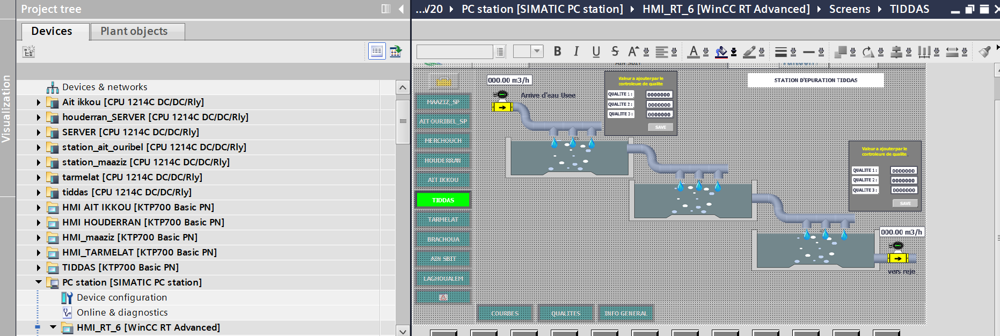

Centralised supervision of six stations
A central PLC exchanges operating data and commands with five geographically separated stations.
Siemens S7-1200 · TIA Portal · PUT/GET · Teltonika VPN

PLC programming, inter-PLC communication, remote networking and integration of operating information for centralised supervision.
My contribution
- Programmed station controls covering pump commands, operating feedback, faults and alarms.
- Configured dedicated data areas and Siemens PUT/GET exchanges between the central PLC and the remote PLCs.
- Configured Teltonika routers, IP addresses, subnets, VPN routing and inter-site connectivity tests.
- Integrated remote operating information for centralised supervision.
Reachable PLC, missing data
One remote PLC was reachable through the network, but its data did not update in the central PLC. I checked connectivity, routing, S7 connections, connection identifiers, data blocks and CPU access settings. The issue was traced to the remote CPU communication access configuration. After correcting the configuration and downloading it, the data exchanges resumed.
What the work enabled
Centralised information from five remote stations and command exchange with the central station over the multi-site VPN.
Public documentation scope
Network addresses, site identifiers, router configurations and client PLC source files are excluded from the public portfolio.
Browse the technical library
Explore examples across my electrical and industrial automation work archive.
Open technical library ↗